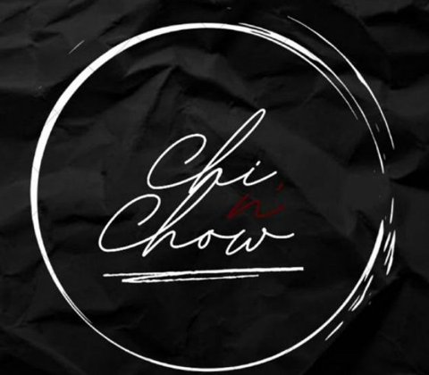
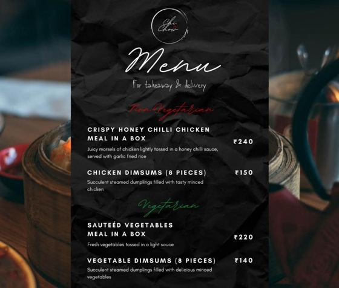

A Pan-Asian takeaway-and-delivery brand I co-founded with my friend Anirudh at 19 — full branding, a real priced menu, and every order taken over WhatsApp and Instagram. Four months in it was profitable and drawing franchise interest from other cities.
Chi & Chow started from a simple question: would people actually pay for the food I was making? We built the whole thing ourselves — the name, the branding, the menu and its prices — and ran it out of a home kitchen with no staff and no storefront.
We split everything 50/50: sourcing, cooking, pricing, marketing, and the delivery logistics behind all of it. Orders came in through Instagram and WhatsApp, which meant every customer conversation, complaint and repeat order came straight to us.
It wound down when it was time to leave for university. By then it had been profitable for months and we'd had franchise enquiries from other cities — not bad for something that existed because we were curious.

A good idea only matters if the unit economics work. We had dishes people loved that we pulled because the margin didn't survive contact with real ingredient costs, and plainer items that carried the business. That gap between what sounds good and what the numbers support is the thing I've carried into every analytics and marketing role since.
It also taught me that being close to the customer is a data source. Running orders through WhatsApp meant I could see which promos actually got used, which days ran hot, and why someone ordered twice in a week — the kind of signal that gets flattened out once there's a platform in between.